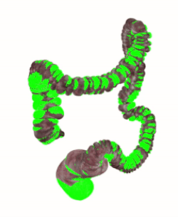
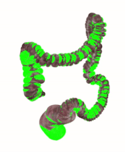

Shuai ZHANG
I am now a Post-Doctoral Research Fellow at Surgical Robot Vision Group, WEISS, University College London, UK. I studied my Ph.D. in the Robotics Institute, University of Technology Sydney, Australia, where I work on robots simultaneous localization and mapping (SLAM), surgical robotics, and optimization techniques in mobile robot localization and mapping and image guide robotic surgery. I am co-advised by Dr. Liang Zhao and Prof. Shoudong Huang.
Email / Google Scholar / ORCiD
News
Recent Projects
During my Ph.D. study, the objective of my research is to develop 3D reconstruction and real-time localization techniques for rigid/deformable environments to facilitate medical robots working in minimally invasive surgery. I have been working on two research projects for my Ph.D. research:

 

Developed Colonoscopy Simulator and Source Code | Technical Details
In this research project, I focused on developing SLAM-based frameworks to reconstruct the 3D maps of the deformable human colon from standard colonoscopy procedures, thus the unsurveyed regions (where precancerous polyps may reside) can be shown on the reconstructed colon maps and help colonoscopists to ensure more colonic surfaces are inspected and to reduce polyps missing rate. Due to the unavailability of complete colonoscopy datasets, I developed a realistic colonoscopy simulator that can simulate the colonoscopy procedures and generate complete colonoscopy datasets for validation of deformable reconstruction algorithms. The developed simulator was made publicly available to promote research in the field.
Technical Details | Code Will be Released Soon...
In the second research project, novel SLAM algorithms were developed to improve bone resection accuracy in total knee arthroplasty (TKA). The proposed framework can precisely and real-timely pre-estimate the proximal tibial resection plane such that the evaluation processing does not need any external fiducials and does not interrupt the working flow of TKA.
Talks
Research
I'm interested in devleoping SLAM algorithms for image-guided robotics surgery (e.g. 3D human organ reconstruction, deformation recovery, surgical operation tools localization and navigation).
Conference Papers:
- 3D Reconstruction of Tibia and Fibula using One General Model and Two X-ray Images
Kai Pan, Shuai Zhang, Liang Zhao, Shoudong Huang, Hua Wang, Qi Luo
ICRA 2023 | paper - SLAM-TKA: Real-time Intra-operative Measurement of Tibial Resection Plane in Conventional Total Knee Arthroplasty
Shuai Zhang, Liang Zhao, Shoudong Huang, Hua Wang, Qi Luo, Qi Hao
MICCAI 2022 | paper - 3D Reconstruction of Deformable Colon Structures based on Preoperative Model and Deep Neural Network
Shuai Zhang, Liang Zhao, Shoudong Huang, Rui Ma, Boni Hu, Qi Hao
ICRA 2021 | paper - Linear Bayesian Filter based Low-cost UWB Systems for Indoor Mobile Robot Localization
Shuai Zhang, Ruihua Han, Wankuan Huang, Shuaijun Wang, and Qi Hao
IEEE SENSORS 2018 | paper - An Integrated UAV Navigation System Based on Geo-registered 3D Point Cloud
Shuai Zhang, Shuaijun Wang, Chengyang Li, Guocheng Liu, Qi Hao
MFI 2017 | paper - A Camera-based Real-time Polarization Sensor and its Application to Mobile Robot Navigation
Shuai Zhang, Huawei Liang, Hui Zhu, Daobin Wang, Biao Yu
ROBIO 2014 | paper
Journal Papers:
- A Template-Based 3D Reconstruction of Colon Structures and Textures From Stereo Colonoscopic Images
Shuai Zhang, Liang Zhao, Shoudong Huang, Menglong Ye, and Qi Hao
TMRB 2020 | paper | Developed Colonoscopy Simulator - A Bionic Camera-Based Polarization Navigation Sensor
Daobin Wang, Huawei Liang, Hui Zhu, Shuai Zhang
SENSORS 2014 | paper